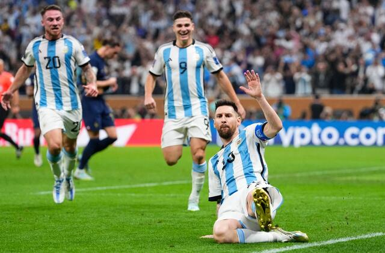
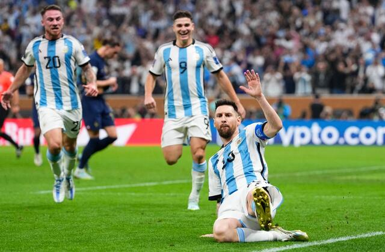

My hobbies consist of playing video games and going to the gym. However, I rarely play video game this days because I haven't seen any good games come out. My style of games include: first-person shooters, rpg, competitive PvP and some story-focused games. My list of games played has: Valorant, Overwatch 2, Minecraft, GTA V, Counter Strike, PUBG, Clash Royale, Brawl Stars and much more. In the gym aspect, I usually divide each muscle group into 5 days of the week. My current routine includes push, pull and legs. Push day involves the chest, triceps and shoulders, pull day exercises the back and biceps and leg day as the name suggests works out the leg muscles. I know this doesn't like a hobby to most people, but I actually quite enjoy working out. I always try to mantain this routine and not miss any days.

My favorite hobby since I was little was always soccer. It is one of the most beautiful sports and which I am grateful to be able to practice. For me it is the best hobby that anyone can have because it is healthy and good for health. I prefer to be a thousand times playing soccer than to be glued to the cell phone or the computer. Thanks to this hobby I have been able to make many friends and strengthen others. In semi-professional football, I play as a striker on the wings, as right back and also as offensive midfielder.
 
